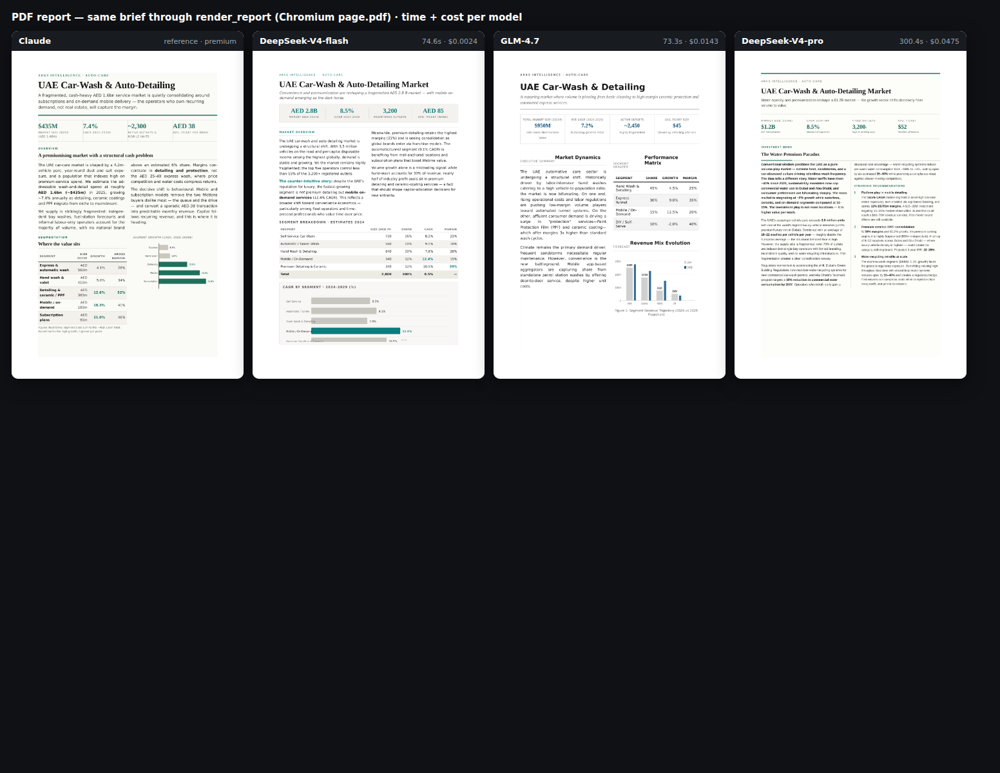
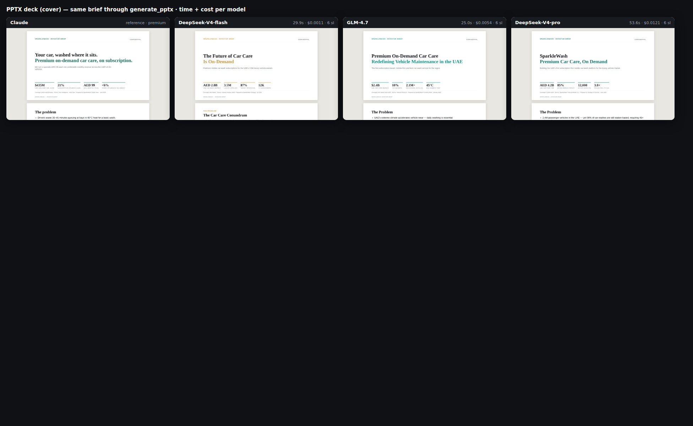

Same UAE car-wash market brief (1-page PDF) + SparkleWash 6-slide investor deck. Each model authored the HTML / slide-spec; ArksAI's REAL render_report (Chromium page.pdf) and generate_pptx (pptxgenjs) tools produced the artifacts — 100% success, no stalls.
| Model | PDF author | PDF $ | PPTX author | PPTX $ | Open |
|---|---|---|---|---|---|
| Claude (ref) | — | — | — | — | PDFPPTX |
| DeepSeek-V4-flash | 74.6s | $0.0024 | 29.9s | $0.0011 | PDFPPTX |
| GLM-4.7 | 73.3s | $0.0143 | 25.0s | $0.0054 | PDFPPTX |
| DeepSeek-V4-pro | 300.4s ⚠️ | $0.0475 | 53.6s | $0.0121 | PDFPPTX |
⚠️ V4-pro over-reasons on the big single PDF (300s) — the same stall pattern M3 has. The cheap/fast tier (V4-flash / GLM-4.7) is both cheaper AND faster with no quality loss on templated deliverables.


The deck cover is design-identical across all four models — generate_pptx owns the layout, so the brain only fills copy. The $0.0011 V4-flash deck is visually indistinguishable from the premium tier; the only differentiator is copy/interpretation.